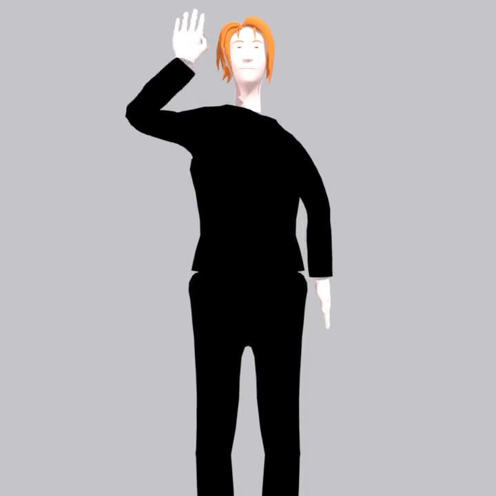

a still hand near your head
isn't HELLO ❌

✗ no movement
HELLO needs the wave 👋
it checks the wave, not just the pose
✓
Hand shape
✗
✓
Movement
no wave, no pass 🤟


QuickSign
free. no downloads. no catch.